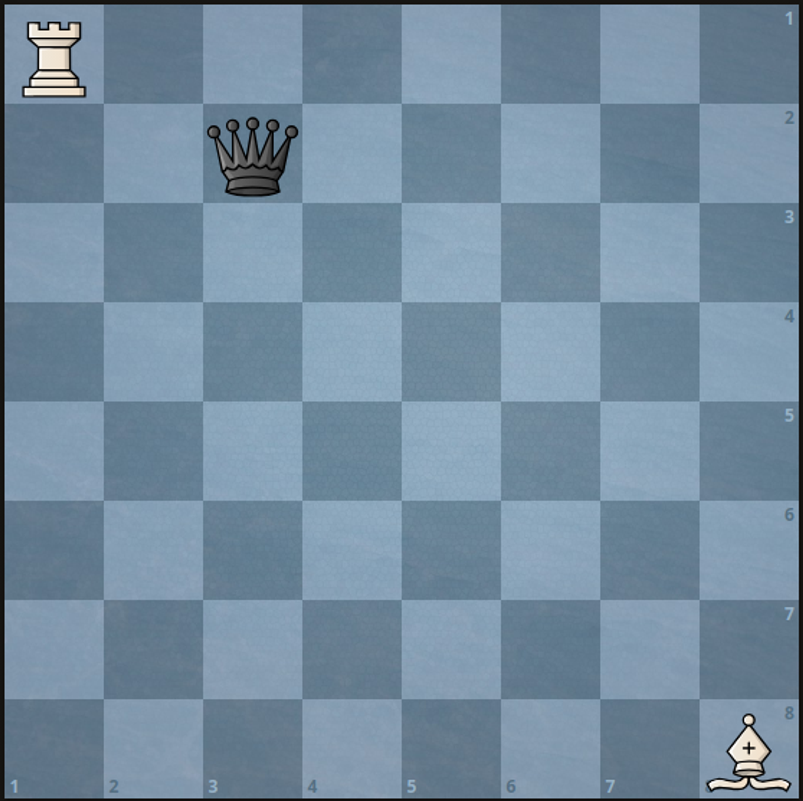
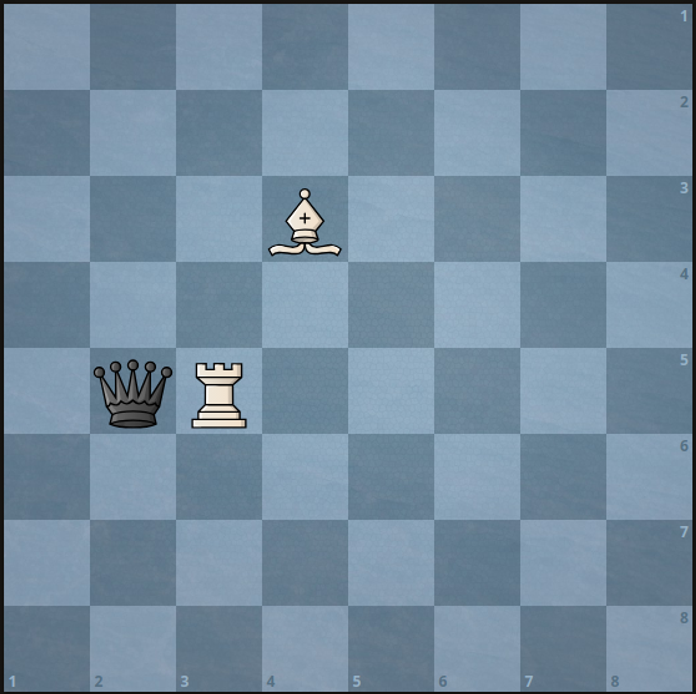

| Category | Difficulty | Likes | Dislikes |
|---|---|---|---|
| Algorithms | Medium | 182 | 206 |
goldman-sachs
There is a 1-indexed 8 x 8 chessboard containing 3 pieces.
You are given 6 integers a, b, c, d, e, and f where:
(a, b) denotes the position of the white rook.(c, d) denotes the position of the white bishop.(e, f) denotes the position of the black queen.Given that you can only move the white pieces, return the minimum number of moves required to capture the black queen.
Note that:
Example 1:

Input: a = 1, b = 1, c = 8, d = 8, e = 2, f = 3
Output: 2
Explanation: We can capture the black queen in two moves by moving the white rook to (1, 3) then to (2, 3).
It is impossible to capture the black queen in less than two moves since it is not being attacked by any of the pieces at the beginning.Example 2:

Input: a = 5, b = 3, c = 3, d = 4, e = 5, f = 2
Output: 1
Explanation: We can capture the black queen in a single move by doing one of the following:
- Move the white rook to (5, 2).
- Move the white bishop to (5, 2).
Constraints:
1 <= a, b, c, d, e, f <= 8